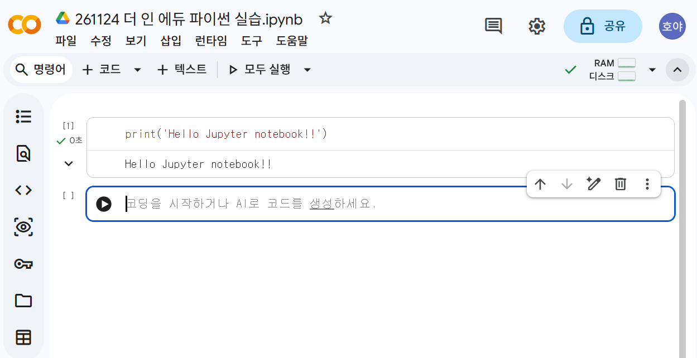
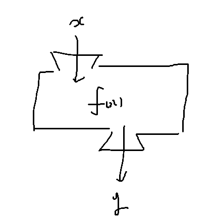
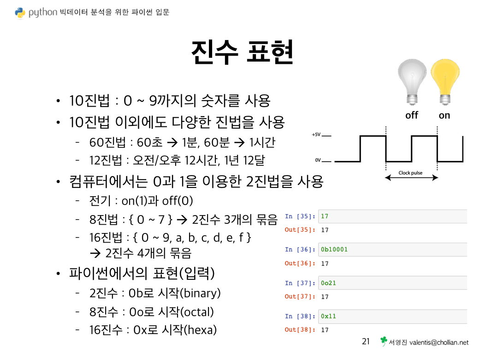

더인 교육 17일차
목차
강의자료 · 코랩으로 진행 · Print가 갖는 의미 · 정올
1. 강의자료
[사용자 노트 필기]
강의자료
[https://valentis.pe.kr/3.pdf](https://valentis.pe.kr/3.pdf)
- 뒤에 숫자만 바꿔서 웹사이트에 넣으면 다운로드가 됨
2. 코랩으로 진행
[사용자 노트 필기]
- 파이썬 사용 X
- 필요하다면 파이썬보다는 Visual Code 사용

3. Print가 갖는 의미

4. 정올
[사용자 노트 필기]
[jungol.co.kr](https://jungol.co.kr/problemset/19121)

[사용자 노트 필기]
- 진수 표현 정도는 상식으로 챙겨가자